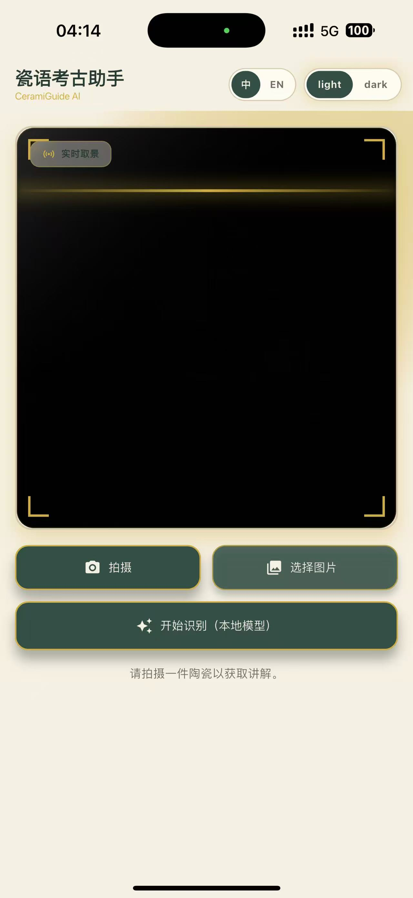
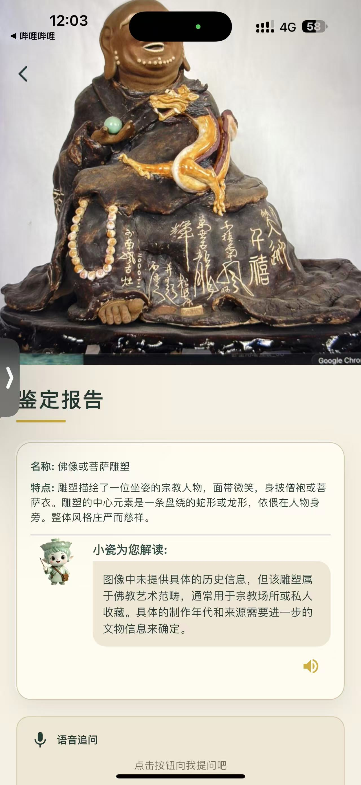
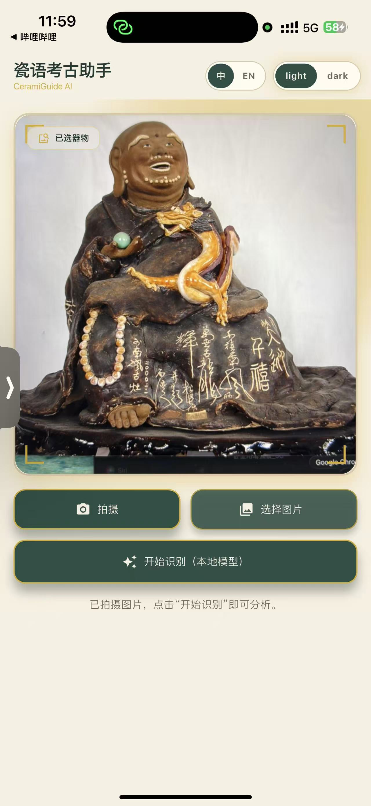

瓷语精灵 CeramiGuide AI
面向博物馆陶瓷展陈的拍照识别与双语语音导览 App。 观众拍下瓷器后，即可获得作品识别、纹饰解读、历史背景和连续问答， 并与 小瓷精灵 用中文或英文自然交流。
识别结果：青花缠枝莲纹瓷瓶
系统识别出器型、釉色、纹样与可能年代，并用观众能听懂的方式解释作品价值。
创意概念
很多观众在博物馆看陶瓷展时只能读到简短展签，无法理解器型、釉色、纹饰和时代背景之间的关系。 瓷语精灵把专业文博知识转化成可听、可问、可切换语言的参观陪伴，让一件瓷器从“静态展品”变成“能对话的文化入口”。
看见即识别
用户拍摄展柜中的陶瓷作品，App 识别器型、材质、釉色、纹样与可能年代，先给出清晰的基础判断。
听懂再追问
小瓷精灵用自然语言解释作品，并支持继续追问，例如“这个纹样有什么寓意”“为什么叫青花”。
双语可切换
中文与英文讲解一键切换，既服务国内观众，也帮助外国游客理解中国陶瓷文化。
核心功能
产品围绕“拍、识、讲、问、听”五个动作设计，让博物馆参观从被动阅读变成主动探索。 功能不追求复杂，而是把最常见的观展困惑转化为一次顺畅的 AI 导览体验。
陶瓷作品拍照识别
识别图片中的陶瓷类别、器型结构、装饰纹样、釉色特征和可能的时代风格。
小瓷精灵分层讲解
同一件作品可生成儿童版、普通观众版和进阶文博版讲解，适配不同知识水平。
连续对话问答
用户可以围绕同一件展品持续追问，系统保留上下文，不需要反复描述作品。
语音交流与朗读
支持按住说话、语音识别、讲解朗读和耳机导览，适合展厅移动参观场景。
中文模式
用亲切、准确的中文解释历史背景、工艺逻辑和审美价值，减少专业术语负担。
English Mode
为海外游客提供英文识别结果、英文语音讲解和跨文化背景补充，提升国际参观体验。
使用流程
从看到作品到获得讲解，用户只需要完成一次拍摄；后续的解释、追问和语言切换都发生在同一个会话里。 这个流程特别适合博物馆现场，因为它减少输入成本，也不会打断参观节奏。
打开相机
进入实时取景界面，对准展柜中的陶瓷作品。
拍摄识别
系统读取图像特征，推断器型、纹饰、釉色和时代线索。
生成讲解
小瓷精灵把专业知识整理成易懂的作品介绍。
继续提问
用户用文字或语音追问，获得更深入的回答。
切换语言
中英模式随时切换，同一件展品获得双语讲解。
原型展示
以下展示素材来自当前创意原型截图。页面保留“取景识别、结果卡片、语音追问、语言切换”的核心设计， 作为初赛 Demo 的视觉方向和交互依据。



对话体验
小瓷精灵不是一次性答案，而是一位能陪用户继续看展的导览伙伴。 它会根据用户问题调整解释深度，并在中文与英文之间保持一致的内容逻辑。
一次典型的展厅对话
价值与意义
瓷语精灵把 AI 识别能力落在公共文化场景中，让博物馆知识更容易被看见、听见和理解。 对观众、博物馆和文化传播来说，它都能提供清晰价值。
初赛 Demo 方向
Demo 将优先完成拍照上传、陶瓷识别结果页、小瓷精灵对话、语音提问入口和中英文切换。 参赛版本会选择若干典型陶瓷样例，集中展示从“拍一张图”到“听懂一件瓷器”的完整体验。